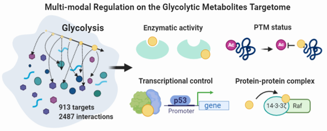
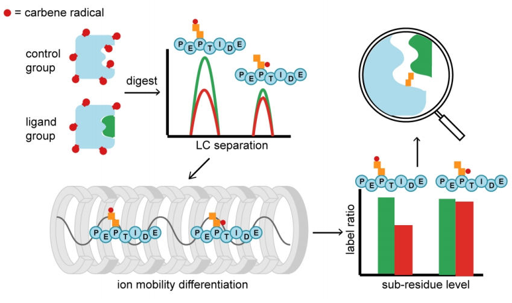

Welcome to HuiYe Lab
Our research focuses on developing and implementing an array of novel analytical tools in the area of metabolomics and chemical proteomics to elucidate the direct binding targets of small molecules including natural medicines and endogenous metabolites, and gain new insights into how these functional molecules regulate protein function and signaling network.
Key Technology for Target Discovery: Target Responsive Accessibility Profiling TRAP

Key Technology in Structural MS: Carbene-based Subresidue Footprinting to probe ligand-protein binding topology

© Copyright © 2013.Company name All rights reserved.网页模板